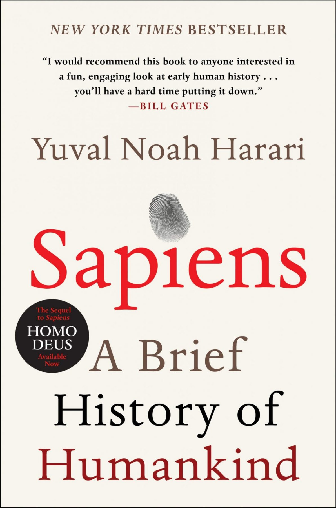
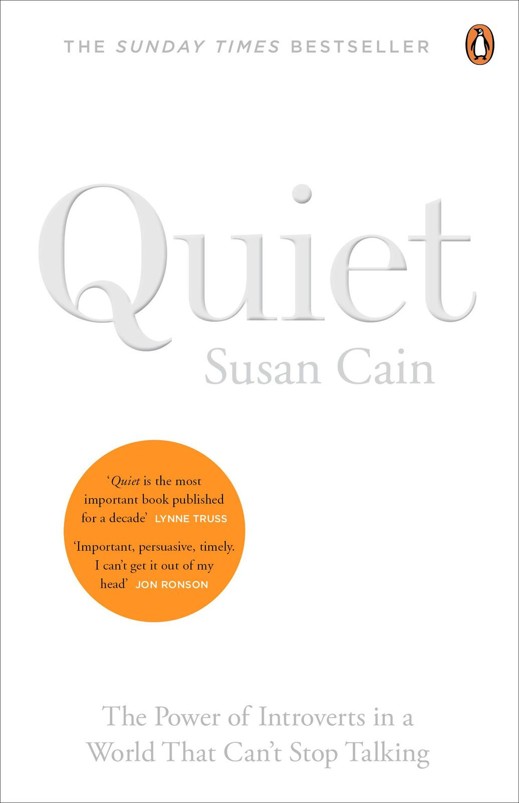
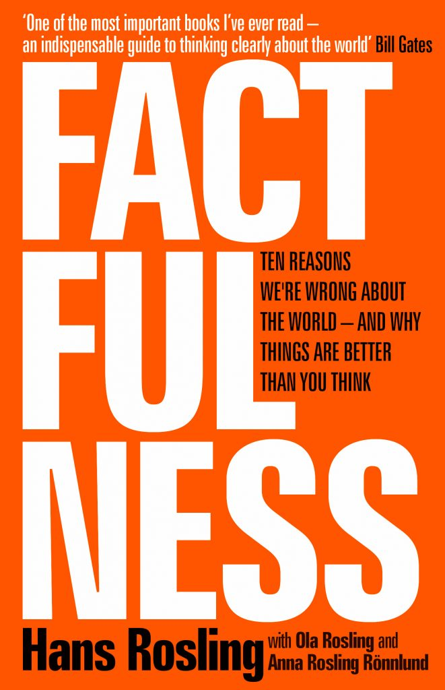
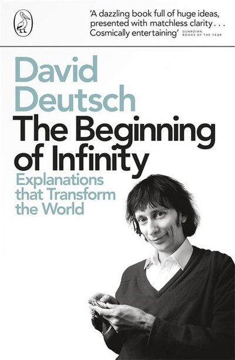
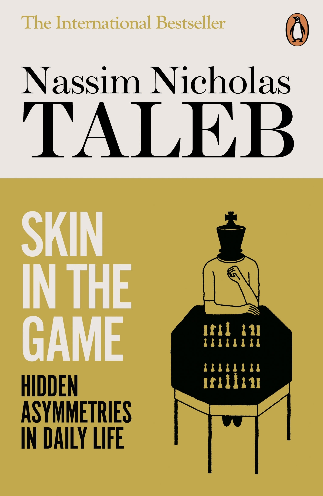
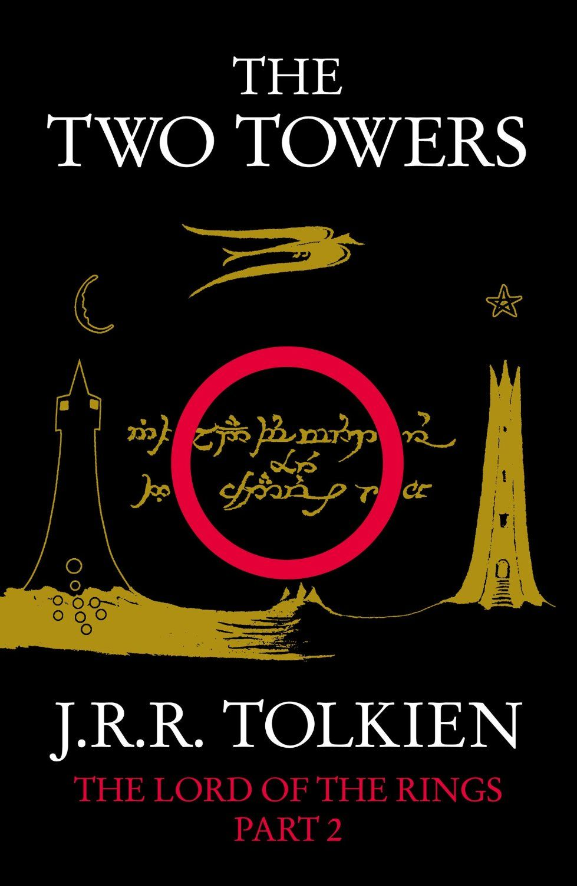
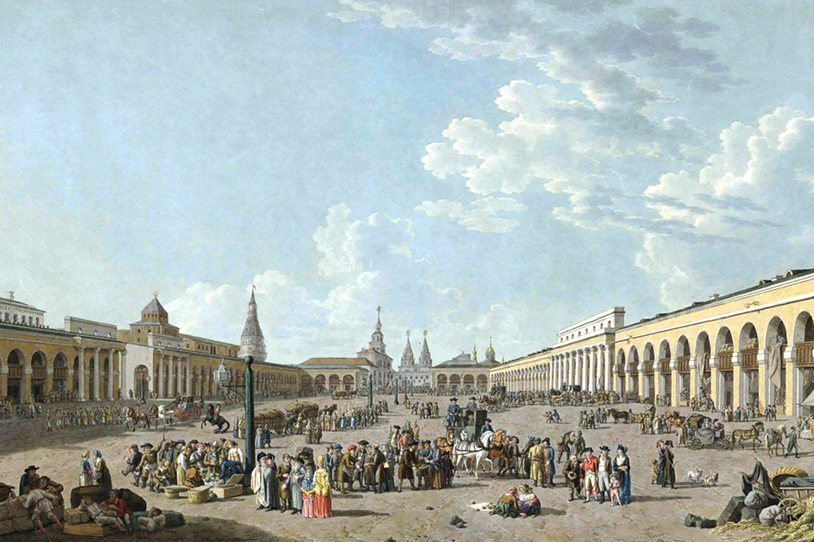
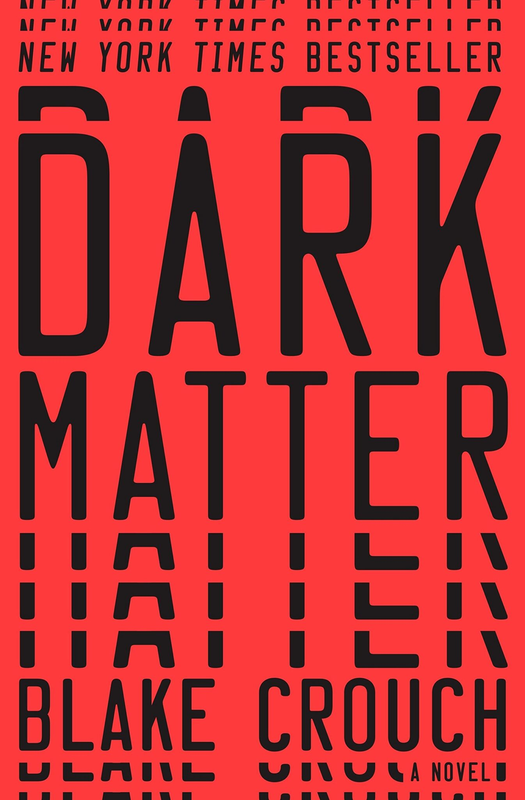

Featured
Nonfiction
Popular
Common Era
On the Shortness of Life

Sapiens

Quiet

Factfulness
Gödel, Escher, Bach

The Beginnning of Infinity

Skin in the Game
Mortality

Shoe Dog

The Two Towers


Crime and Punishment
The Silent Patient

Dark Matter

Animal Farm
Ordeal by Innocence
The Guest List
The Outsider
The Stranger